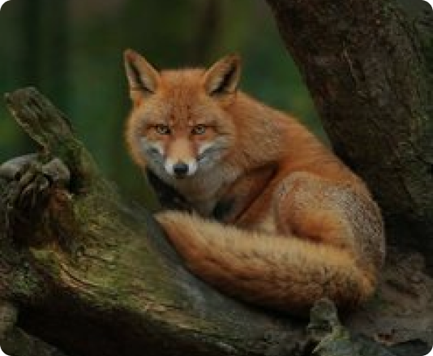
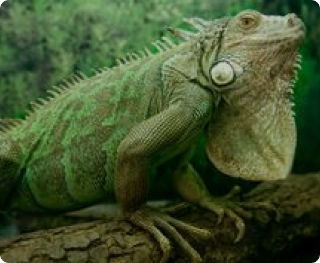
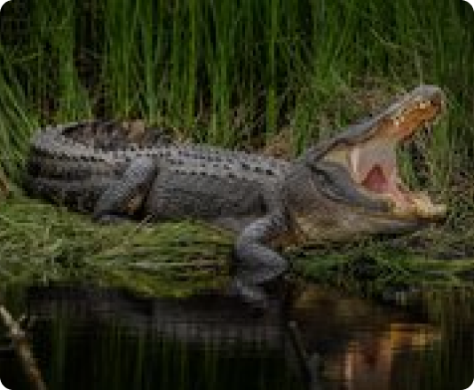
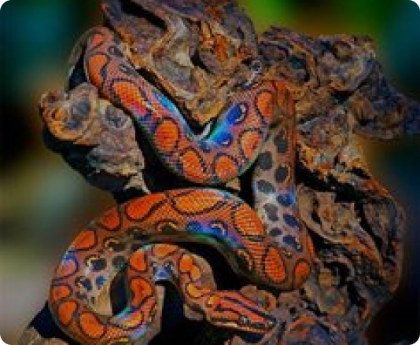
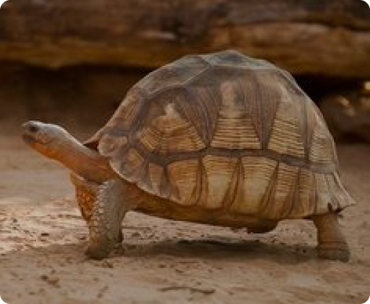
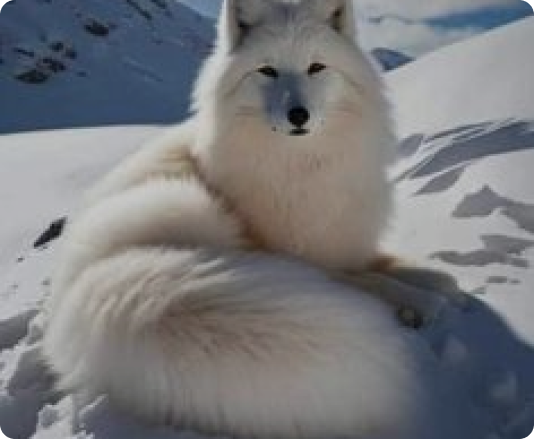

Амурский тигр
В нашем зоопарке живёт пара амурских тигров — Джагар и Джуна. Джуна приехала в зоопарк в 2018 году из Московского зоопитомника, а Джагар двумя годами ранее из Ижевского зоопарка.
Найдено: 9
В нашем зоопарке живёт пара амурских тигров — Джагар и Джуна. Джуна приехала в зоопарк в 2018 году из Московского зоопитомника, а Джагар двумя годами ранее из Ижевского зоопарка.

Рысь — самая северная кошка. В отличие от большинства кошачьих у неё короткий хвост.

Ведёт одиночный образ жизни, в период размножения живёт парами.

Наиболее крупный представитель семейства. Достигает до 2 м длины. Ведёт древесный образ жизни. В случае опасности скрывается в воде. Превосходно плавает и ныряет.

Питается рыбой, мелкими млекопитающими, черепахами. Яйца откладывает в гнёзда из гниющей растительности. Самка остаётся вблизи кладки, защищая её от врагов.

Этот подвид бурого медведя отличается светлой окраской и длинными светлыми, почти белыми когтями на передних лапах.

Радужным удав назван за необычайно сильный металлический блеск чешуи, создающий живую гамму всех цветов радуги при движении змеи в лучах солнца.

По величине грифовая черепаха достигает до 1,5 м и весит до 60 кг. Своё название получила из-за мощных челюстей и выступов на панцире, похожих на кожу аллигатора.

Снежная лисица — порода обыкновенной лисицы, выведенная человеком. Также её называют бакурианской и грузинской.
В зоопарке вы часто видите, как в одном вольере гуляют животные разных видов: например, страусы и жирафы, патагонские мары и тапир, верблюды и домашние овцы. Зачем же мы устраиваем такие «общежития»? Во-первых, именно так звери и птицы живут в дикой природе: в африканских саваннах зебры пасутся бок о бок с газелями, а над ними возвышаются слоны и жирафы.
Для животных естественно видеть и слышать не только своих сородичей, но и самых разнообразных соседей. А в зоопарке это особенно важно: «искусственная» среда обитания бедна событиями и стимулами. Даже самый большой вольер не может сравниться с территорией, доступной в дикой природе. Мы не можем строить огромные вольеры, но можем сделать жизнь наших подопечных более насыщенной за счёт обогащения среды, тренингов и совместного содержания. В таких смешанных экспозициях животные могут взаимодействовать, а могут игнорировать соседей, но картинка перед глазами у них меняется. А ещё — много звуков и запахов! Это тоже важно.